Nutmeg Cake
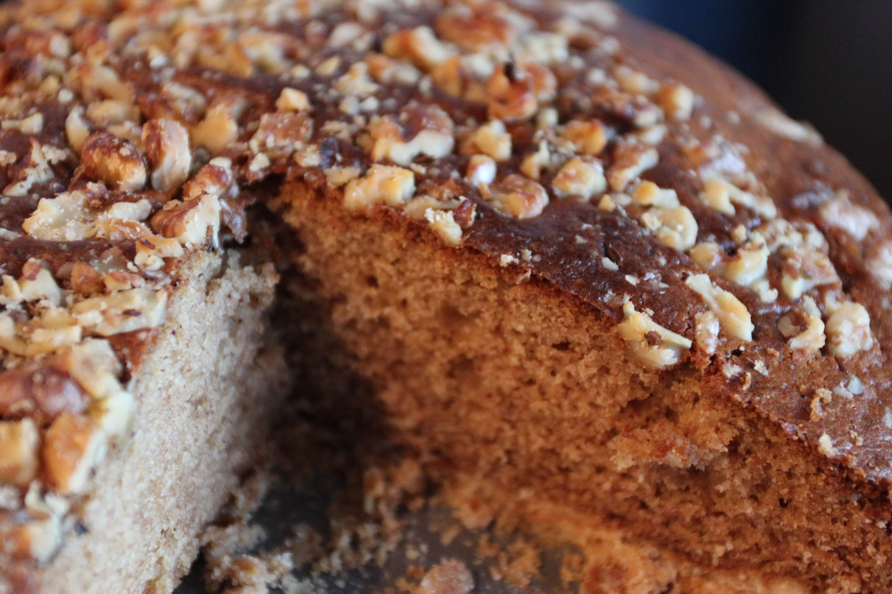 Effort: Easy/Medium20 mins (Prep), 40 mins (Bake)
Ingredients
Dry Ingredients
- 2 teaspoons baking powder
- 1 teaspoon baking soda
- 2 cups flour
- 1 ½ cups brown sugar
- 1 ½ sticks unsalted butter
- ½ cup walnut pieces
- 1 teaspoon nutmeg
- 1 teaspoon cinammon
Wet Ingredients
- 1 cup milk
- 1 egg
Preparation
- Preheat oven to 350 degrees Farenheit.
- Combine flour, baking powder, and brown sugar in bowl. Mix in butter until a crumbly texture is reached.
- Press half of this dry mixture into the base of a springform pan to form crust.
- Add remaining ingredients (other than walnuts) into remaining half of dry mix. Mix in for 1 minute, gradually increasing to highest available mixing speed.
- Pour liquid mix over crust.
- Place walnuts in Ziploc bag. Gently crush walnuts by hitting the bag with a spoon.
- Sprinkle walnuts over top of cake.
- Bake for 40 minutes (until toothpick comes out clean).
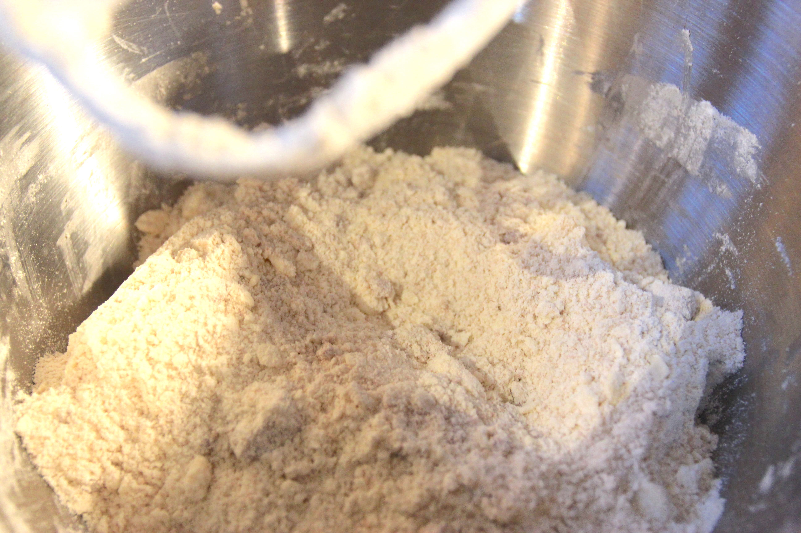
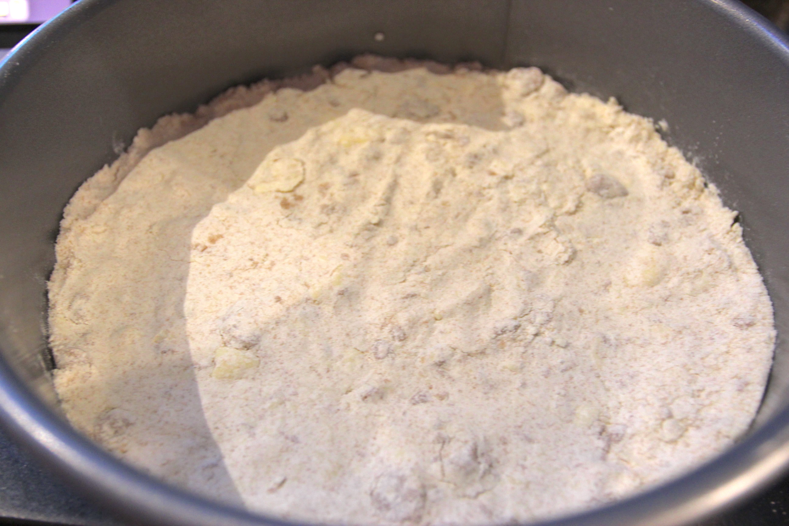
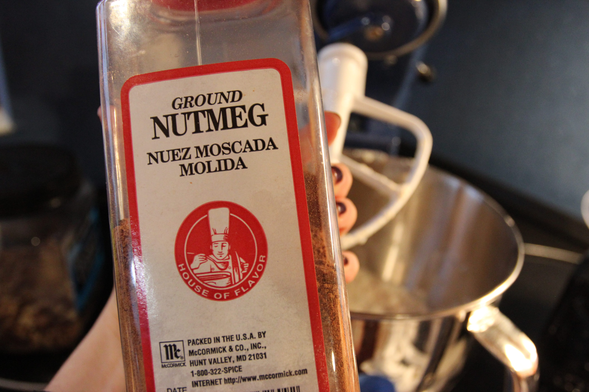
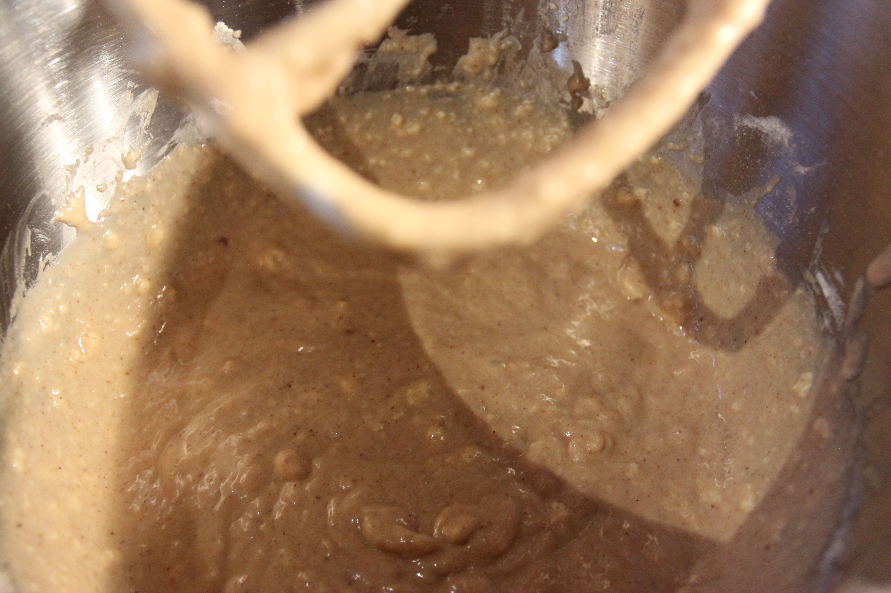
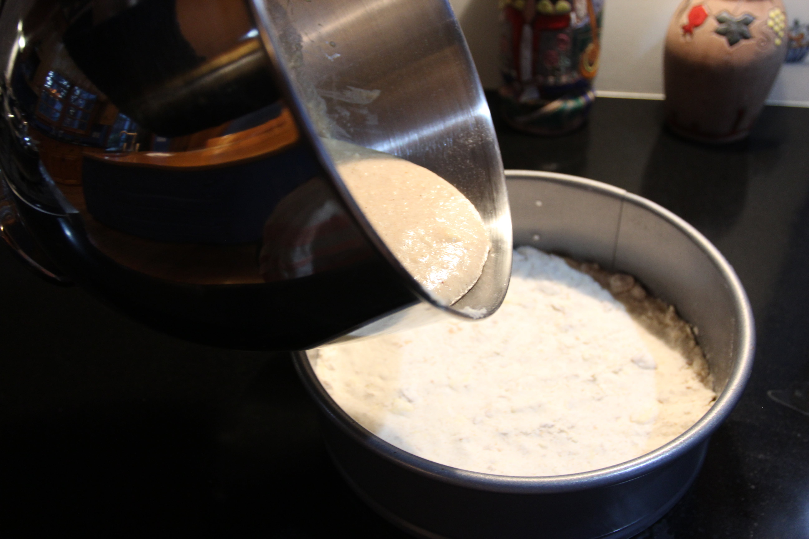
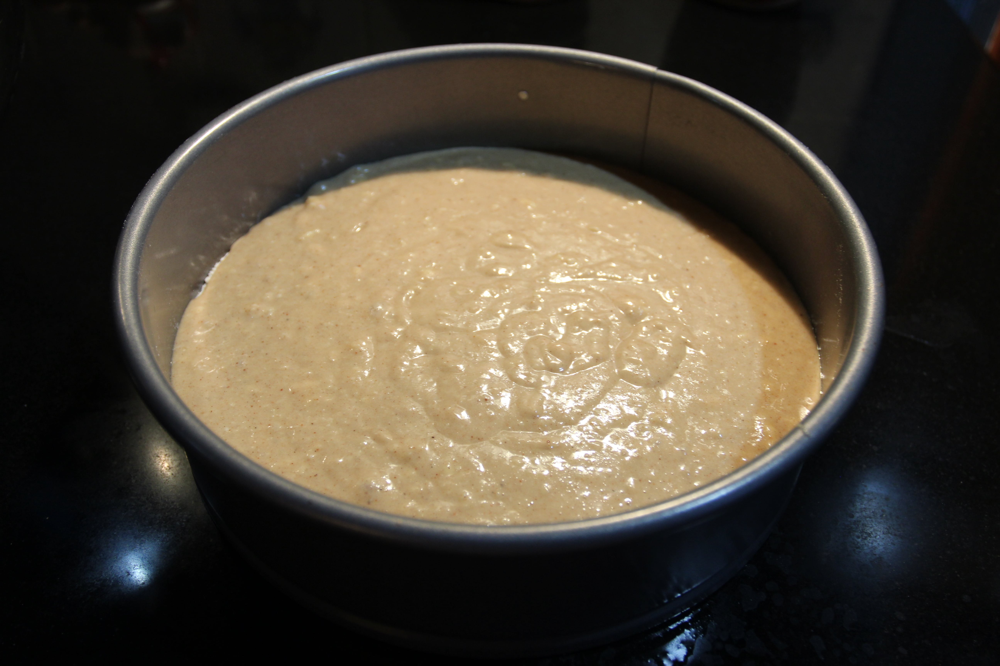
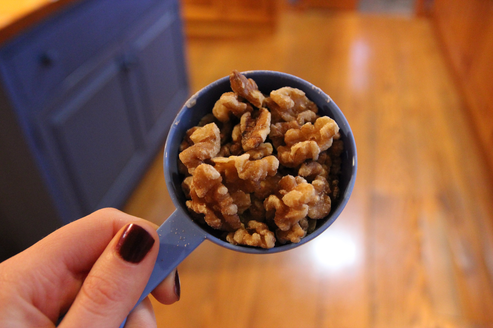
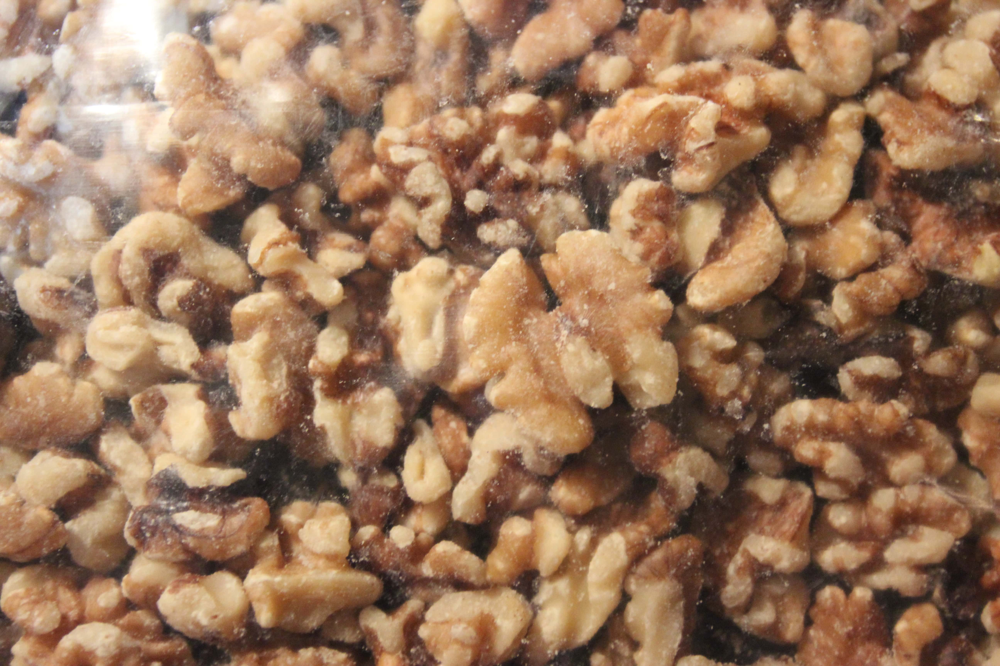
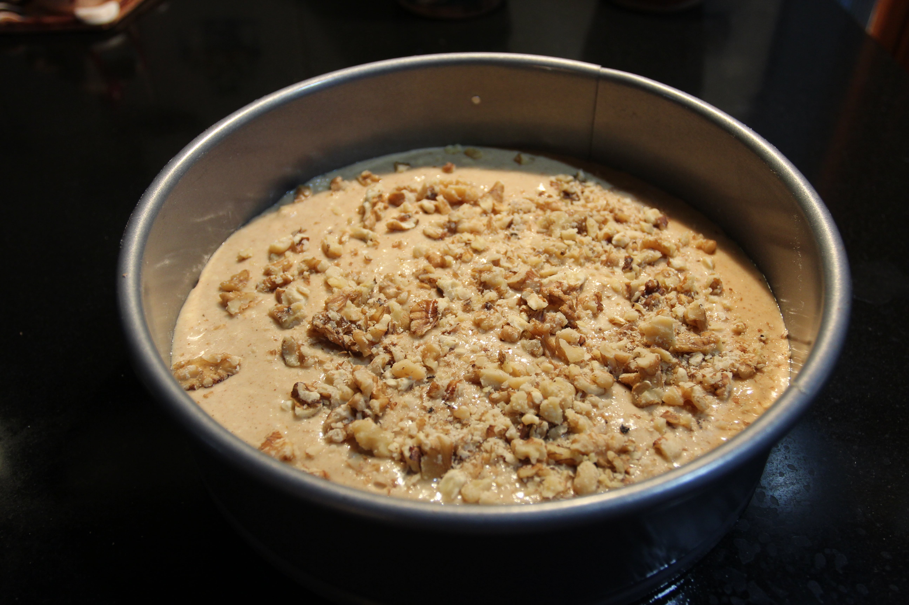
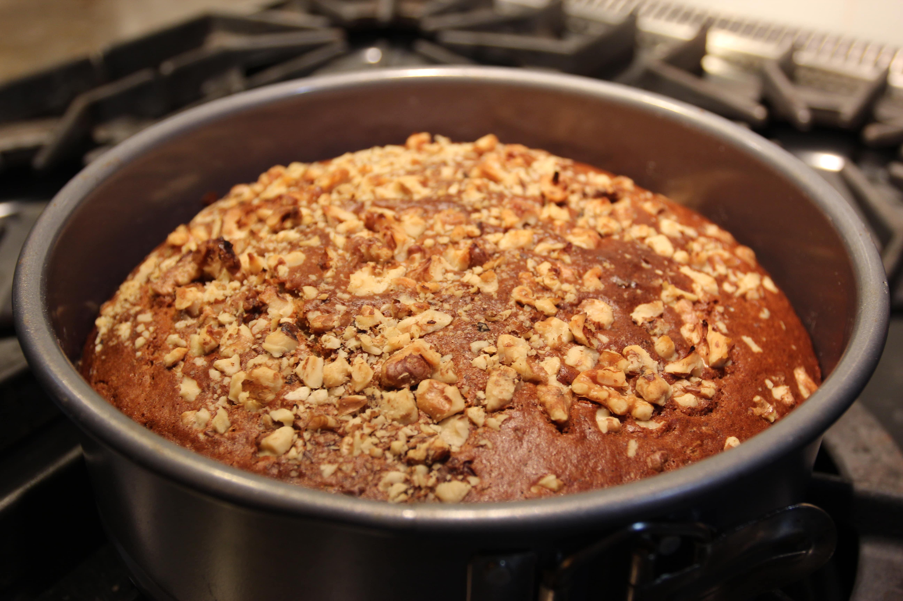
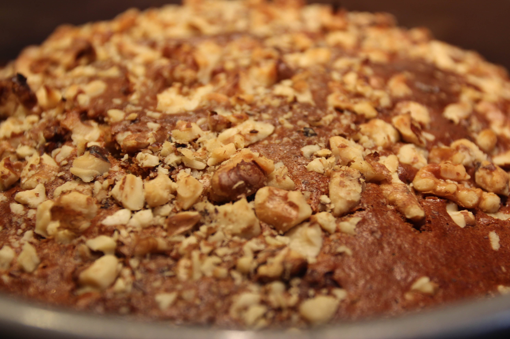
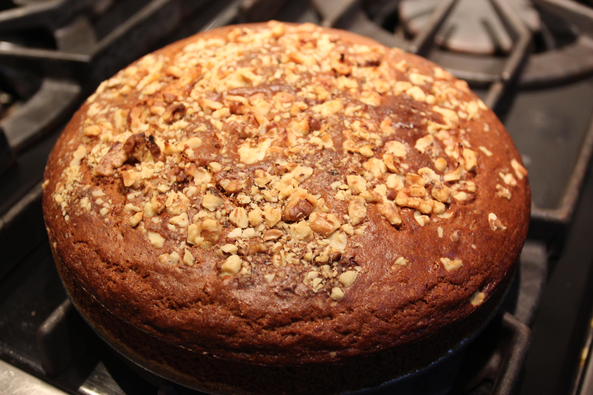